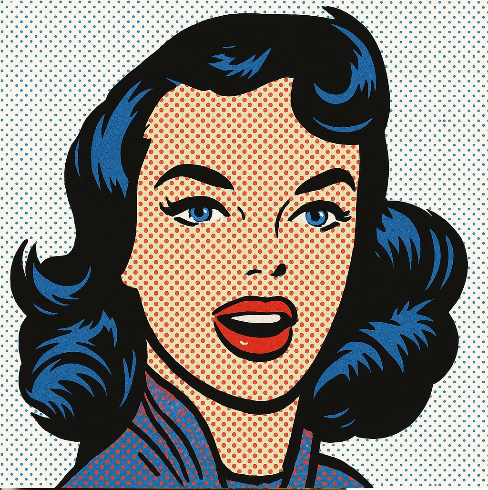

¿Qué es el Pop Art?
El Pop Art fue un movimiento artístico que comenzó a desarrollarse durante la década de 1950 en Gran Bretaña y adquirió una enorme visibilidad en Estados Unidos durante los años sesenta. Su punto de partida fue una transformación cultural: la televisión, la publicidad, los supermercados, el cine y las revistas multiplicaban imágenes que podían ser reconocidas por millones de personas. Frente a la idea de que el arte debía mantenerse separado de la vida cotidiana, sus artistas tomaron esas imágenes como materia de trabajo.
La palabra «popular» no significa necesariamente que todas sus obras fueran fáciles de comprender ni que el movimiento celebrara sin reservas la cultura comercial. En muchos casos se trataba de observar críticamente cómo los productos, los ídolos y los medios construyen deseos. En otros, la fascinación por los colores, la repetición y la claridad de las imágenes tenía un papel central. Esa ambigüedad entre homenaje e ironía es una de sus características más interesantes.